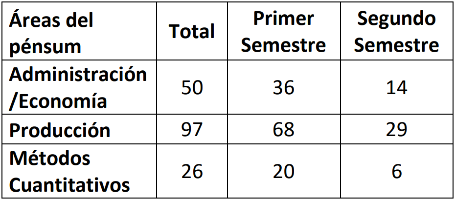

Artículo 3 Áreas del pénsum de Ingeniería Industrial aplicadas en la práctica laboral
3.1 Resumen
El pénsum de estudios de la carrera de ingeniería industrial de la Universidad de San Carlos de Guatemala (Usac) está integrado por tres áreas profesionales: Administración/Economía, Producción y Métodos Cuantitativos.
Los estudiantes de las diferentes carreras de la Facultad de Ingeniería al realizar las prácticas finales desarrollan proyectos relativos a los campos de aplicación de su especialidad. Durante el año 2020, en las prácticas finales de ingeniería industrial se asignaron 244 estudiantes, de los cuales 173 optaron a la modalidad de práctica laboral.
Con el fin de identificar las áreas del pénsum seleccionadas por los estudiantes de práctica laboral se analizó los proyectos realizados. El 29% de los estudiantes elige proyectos del área Administración/ Economía, 56% del área de Producción y 15% del área de Métodos Cuantitativos.
3.2 Introducción
El programa de prácticas de ingeniería, de la Universidad de San Carlos de Guatemala (Usac) de acuerdo con el normativo vigente es: “Una serie de actividades prácticas diseñadas en distintas modalidades, que forma parte del pénsum de estudios de la Facultad de Ingeniería de dicha casa de estudios, que tiene como misión formar estudiantes de Ingeniería con capacidad de aplicar los conocimientos, habilidades (destrezas) y criterios de su especialidad de acuerdo a su nivel académico, de tal forma que pueda confrontar los conocimientos teóricos con el mundo real y comprobar así su veracidad.”
Las prácticas finales forman parte del programa de prácticas de ingeniería, son de carácter obligatorio para todos los estudiantes de las diferentes especialidades de la ingeniería que han aprobado 200 o más créditos académicos. Las tres opciones de las prácticas finales de la Facultad de Ingeniería son: Práctica Laboral, Docente y Empresarios Juveniles.
El pénsum de la carrera de ingeniería industrial de la Facultad de Ingeniería de la Usac, está organizado por áreas: Administración/Economía, Producción y Métodos Cuantitativos. Los proyectos desarrollados por los estudiantes de prácticas finales en la modalidad laboral, corresponden a temas incluidos en las áreas del pénsum indicadas anteriormente.
3.3 Artículo
3.3.1 Materiales y métodos
Los objetivos del estudio son:
Identificar las áreas del pénsum de ingeniería industrial consideradas en la práctica laboral.
Asociar los proyectos de práctica laboral con las áreas del pénsum de ingeniería industrial.
La fuente del estudio es documental y con alcance descriptivo. Se consultó la página web de la Facultad de Ingeniería y de la Escuela de Ingeniería Mecánica Industrial, para obtener el pénsum de estudios, analizar las áreas en que está dividido y los cursos que las integran. También se indagó en la plataforma virtual de la Unidad de Ejercicio Profesional Supervisado (EPS), para obtener el normativo de las prácticas de ingeniería. Además, se revisaron las bases de datos de las prácticas finales de los asesores docentes de la Unidad de EPS, del primer y segundo semestres del año 2020.
 Tabla 3.1: Áreas del pénsum de ingeniería industrial aplicadas en las prácticas finales en el año 2020.
En la tabla 3.1 se puede observar que en el año 2020 se asignaron a la práctica laboral en el primer semestre 124 estudiantes y 49 en el segundo. De los proyectos realizados, 50 corresponden al área de Administración/Economía, 97 al área de Producción y 26 al área de Métodos Cuantitativos.
Figura 3.1: Áreas del pénsum de ingeniería industrial aplicadas en las prácticas finales en el año 2020.
En la figura 3.1 se observa que el 29% de proyectos realizados son del área de Administración/Economía, 56% del área de Producción y 15% del área de Métodos Cuantitativos.
3.4 Conclusiones
Al analizar el pénsum de estudios de la carrera de ingeniería industrial se identificó que está dividido en tres áreas: Administración/Economía, Producción y Métodos Cuantitativos. Las áreas Administrativa/Economía y de Producción son las de mayor aplicación en los proyectos de prácticas finales.
Al asociar los proyectos de prácticas finales con las áreas del pénsum de ingeniería industrial se evidencia que el 29% de los proyectos realizados por los estudiantes corresponden al área Administración / Economía, 56% al área de Producción y 15% al área de Métodos Cuantitativos.
3.5 Recomendaciones
Las autoridades de la Escuela de Ingeniería Mecánica Industrial y de la Unidad de EPS deben trabajar en conjunto para analizar las áreas del pénsum seleccionadas por los estudiantes de prácticas finales de ingeniería industrial y establecer estrategias para motivar el desarrollo de proyectos integrales.
3.6 Referencias
[1] Unidad de Ejercicio Profesional Supervisado (EPS), Normativo del Programa de Prácticas de la Facultad de Ingeniería de la Universidad de San Carlos de Guatemala, 12 de abril de 2021. [En línea]. Disponible en: https://bit.ly/3tA3UTC. [Último acceso: 12 de abril de 2021].
[2] Facultad de Ingeniería, USAC, [«Facultad de Ingeniería, USAC»], Facultad de Ingeniería, USAC., 12 de abril de 2021. [En línea]. Disponible en: https://bit.ly/394GSeh. [Último acceso: 12 de abril de 2021].
[3] EMI, [«EMI»], Cursos Área Administrativa., 12 de abril de 2021. [En línea]. Disponible en: https://bit.ly/2X9psKI. [Último acceso: 12 de abril de 2021].
[4] EMI, [«EMI»], Cursos Área de Producción, 12 de abril de 2021. [En línea]. Disponible en: https://bit.ly/3z54ry7. [Último acceso: 12 de abril de 2021].
[5] EMI, [«EMI»], Cursos Área Cuantitativa, 12 de abril de 2021. [En línea]. Disponible en: https://bit.ly/3hosFx6. [Último acceso: 12 de abril de 2021].